Load packages & workspace.
# install packages
# devtools::install_github("https://github.com/tdienlin/td@v.0.0.2.5")
# define packages
packages <- c("broom.mixed", "brms", "corrr", "devtools", "GGally", "ggplot2",
"gridExtra", "kableExtra", "knitr", "lavaan", "lme4",
"magrittr", "mice", "PerFit", "performance", "psych",
"quanteda.textstats", "scales", "semTools", "tidyverse")
# load packages
lapply(c(packages, "td"), library, character.only = TRUE)
# load workspace
load("data/workspace_1.RData")Let’s first inspect the individual measures, how they develop over time. For positive and negative affect, we also look at their factor structure, as they’re measured with multiple items.
Let’s inspect the development of life satisfaction across the study. We nest reponses inside participants and waves to get better results.
fit_life_sat <- lmer(life_sat ~ (1 | id) + (1 | wave), d_long_100_imp)
summary(fit_life_sat)## Linear mixed model fit by REML ['lmerMod']
## Formula: life_sat ~ (1 | id) + (1 | wave)
## Data: d_long_100_imp
##
## REML criterion at convergence: 502126
##
## Scaled residuals:
## Min 1Q Median 3Q Max
## -3.989 -0.494 0.162 0.642 3.914
##
## Random effects:
## Groups Name Variance Std.Dev.
## id (Intercept) 1.14131 1.0683
## wave (Intercept) 0.00365 0.0604
## Residual 4.94237 2.2231
## Number of obs: 111520, groups: id, 3483; wave, 32
##
## Fixed effects:
## Estimate Std. Error t value
## (Intercept) 6.506 0.022 295dat_fig_life_sat <- data.frame(type = "Life satisfaction", dimension = "Life satisfaction",
get_dat(fit_life_sat))
make_graph(dat_fig_life_sat, "Life Satisfaction", 1, 10)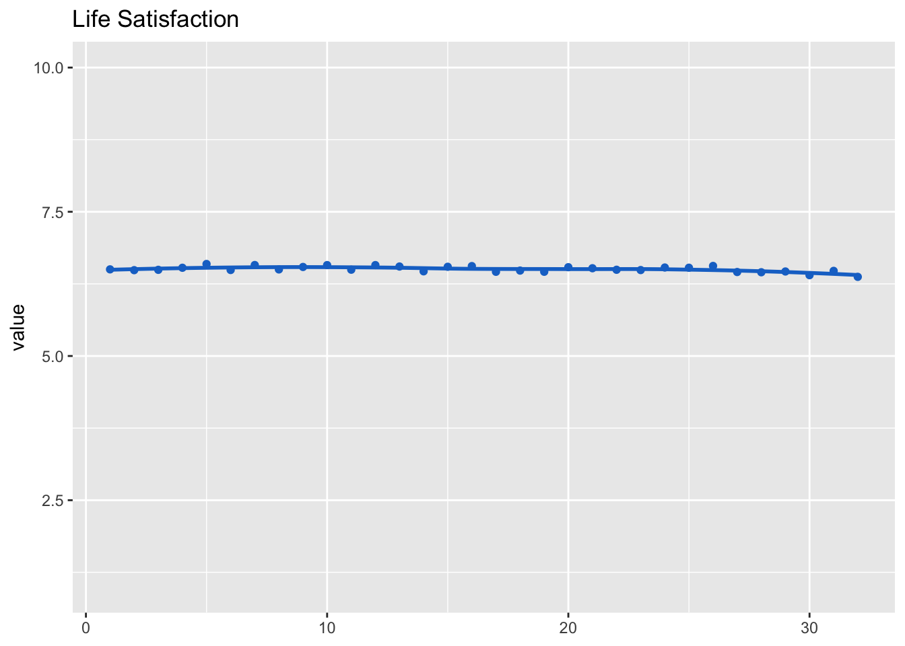
Let’s next expect the development across waves.
model_aff_pos <- lmer(aff_pos_m ~ (1 | id) + (1 | wave), d_long_100_imp)
summary(model_aff_pos)## Linear mixed model fit by REML ['lmerMod']
## Formula: aff_pos_m ~ (1 | id) + (1 | wave)
## Data: d_long_100_imp
##
## REML criterion at convergence: 310256
##
## Scaled residuals:
## Min 1Q Median 3Q Max
## -3.932 -0.697 -0.008 0.696 3.508
##
## Random effects:
## Groups Name Variance Std.Dev.
## id (Intercept) 0.29154 0.5399
## wave (Intercept) 0.00156 0.0395
## Residual 0.87535 0.9356
## Number of obs: 111520, groups: id, 3483; wave, 32
##
## Fixed effects:
## Estimate Std. Error t value
## (Intercept) 3.1649 0.0118 267dat_fig_aff_pos <- data.frame(type = "Affect", dimension = "Positive",
get_dat(model_aff_pos))
make_graph(dat_fig_aff_pos, "Positive Affect", 1, 5)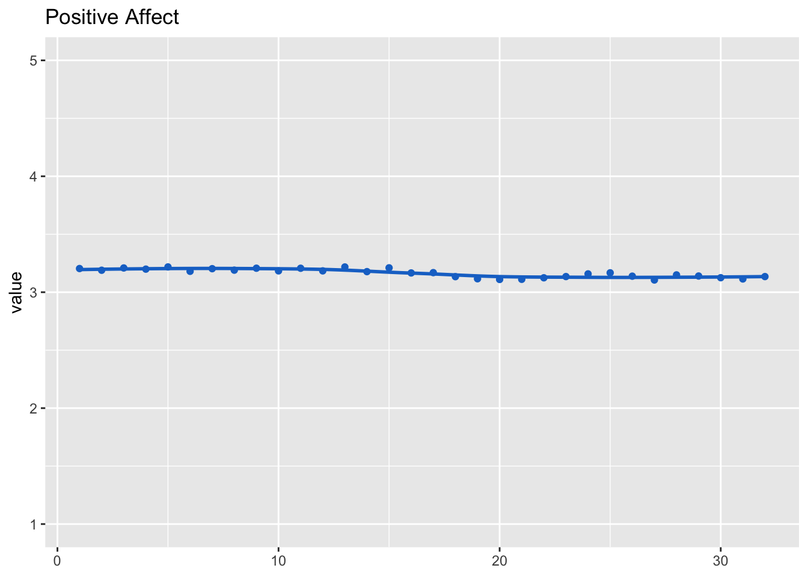
Positive affect was measured as a scale. We hence also inspect factorial validity using CFA.
We first test assumption of multivariate normality. We focus on wave 1 here.
d_long_100_imp %>%
filter(wave == 1) %>%
select(aff_pos_1, aff_pos_2, aff_pos_3) %>%
mardia()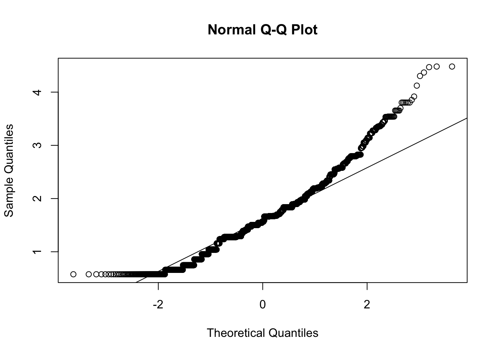
## Call: mardia(x = .)
##
## Mardia tests of multivariate skew and kurtosis
## Use describe(x) the to get univariate tests
## n.obs = 3485 num.vars = 3
## b1p = 0.3 skew = 173 with probability <= 0.000000000000000000000000000000067
## small sample skew = 173 with probability <= 0.00000000000000000000000000000006
## b2p = 14 kurtosis = -3.5 with probability <= 0.00038Assumption of multivariate normal distribution was violated; hence, robust estimator will be used.
model <- "
aff_pos =~ a1*aff_pos_1 + a2*aff_pos_2 + a3*aff_pos_3
"
cfa_aff_pos <- cfa(model, d_long_100_imp, group = "wave", estimator = "MLM")
summary(cfa_aff_pos, standardized = TRUE, fit = TRUE, estimates = FALSE)## lavaan 0.6-12 ended normally after 103 iterations
##
## Estimator ML
## Optimization method NLMINB
## Number of model parameters 288
## Number of equality constraints 62
##
## Number of observations per group:
## 1 3485
## 2 3485
## 3 3485
## 4 3485
## 5 3485
## 6 3485
## 7 3485
## 8 3485
## 9 3485
## 10 3485
## 11 3485
## 12 3485
## 13 3485
## 14 3485
## 15 3485
## 16 3485
## 17 3485
## 18 3485
## 19 3485
## 20 3485
## 21 3485
## 22 3485
## 23 3485
## 24 3485
## 25 3485
## 26 3485
## 27 3485
## 28 3485
## 29 3485
## 30 3485
## 31 3485
## 32 3485
##
## Model Test User Model:
## Standard Robust
## Test Statistic 60.132 66.826
## Degrees of freedom 62 62
## P-value (Chi-square) 0.544 0.315
## Scaling correction factor 0.900
## Satorra-Bentler correction
## Test statistic for each group:
## 1 3.947 4.386
## 2 0.121 0.134
## 3 3.919 4.356
## 4 2.039 2.266
## 5 0.092 0.103
## 6 0.623 0.693
## 7 5.704 6.339
## 8 0.223 0.247
## 9 2.959 3.288
## 10 1.436 1.595
## 11 4.676 5.197
## 12 3.492 3.881
## 13 0.450 0.500
## 14 0.258 0.286
## 15 1.122 1.246
## 16 0.490 0.545
## 17 1.265 1.406
## 18 2.289 2.543
## 19 0.568 0.631
## 20 0.363 0.404
## 21 5.414 6.017
## 22 0.608 0.676
## 23 5.269 5.855
## 24 0.438 0.487
## 25 0.830 0.923
## 26 0.204 0.227
## 27 1.778 1.976
## 28 0.165 0.184
## 29 6.551 7.281
## 30 0.427 0.475
## 31 0.274 0.304
## 32 2.137 2.375
##
## Model Test Baseline Model:
##
## Test statistic 148883.499 167857.654
## Degrees of freedom 96 96
## P-value 0.000 0.000
## Scaling correction factor 0.887
##
## User Model versus Baseline Model:
##
## Comparative Fit Index (CFI) 1.000 1.000
## Tucker-Lewis Index (TLI) 1.000 1.000
##
## Robust Comparative Fit Index (CFI) 1.000
## Robust Tucker-Lewis Index (TLI) 1.000
##
## Loglikelihood and Information Criteria:
##
## Loglikelihood user model (H0) -468984.719 -468984.719
## Loglikelihood unrestricted model (H1) -468954.653 -468954.653
##
## Akaike (AIC) 938421.438 938421.438
## Bayesian (BIC) 940596.001 940596.001
## Sample-size adjusted Bayesian (BIC) 939877.765 939877.765
##
## Root Mean Square Error of Approximation:
##
## RMSEA 0.000 0.005
## 90 Percent confidence interval - lower 0.000 0.000
## 90 Percent confidence interval - upper 0.010 0.012
## P-value RMSEA <= 0.05 1.000 1.000
##
## Robust RMSEA 0.004
## 90 Percent confidence interval - lower 0.000
## 90 Percent confidence interval - upper 0.011
##
## Standardized Root Mean Square Residual:
##
## SRMR 0.006 0.006The data fit the model very well, \(\chi^2\)(62) = 60.13, p = .544, CFI = 1.00, RMSEA < .01, 90% CI [< .01, .01], SRMR < .01. Let’s next inspect reliability.
rel_aff_pos <- get_rel(cfa_aff_pos)The average reliability across all waves was omega = 0.85, hence good.
Let’s now export factor scores for results reported in additional analyses.
# with imputed data
cfa_aff_pos_50 <- cfa(model, d_long_50_imp, group = "wave", estimator = "MLM")
d_long_50_imp$aff_pos_fs <- get_fs(cfa_aff_pos_50)
# without imputed data
cfa_aff_pos <- cfa(model, d_long_50, group = "wave", estimator = "MLM")
d_long_50$aff_pos_fs <- get_fs(cfa_aff_pos)model_aff_neg <- lmer(aff_neg_m ~ (1 | id) + (1 | wave), d_long_100_imp)
summary(model_aff_neg)## Linear mixed model fit by REML ['lmerMod']
## Formula: aff_neg_m ~ (1 | id) + (1 | wave)
## Data: d_long_100_imp
##
## REML criterion at convergence: 262586
##
## Scaled residuals:
## Min 1Q Median 3Q Max
## -4.326 -0.564 -0.193 0.281 5.038
##
## Random effects:
## Groups Name Variance Std.Dev.
## id (Intercept) 0.19149 0.438
## wave (Intercept) 0.00152 0.039
## Residual 0.57069 0.755
## Number of obs: 111520, groups: id, 3483; wave, 32
##
## Fixed effects:
## Estimate Std. Error t value
## (Intercept) 1.7879 0.0104 172dat_fig_aff_neg <- data.frame(type = "Affect", dimension = "Negative", get_dat(model_aff_neg))
make_graph(dat_fig_aff_neg, "Negative Affect", 1, 5)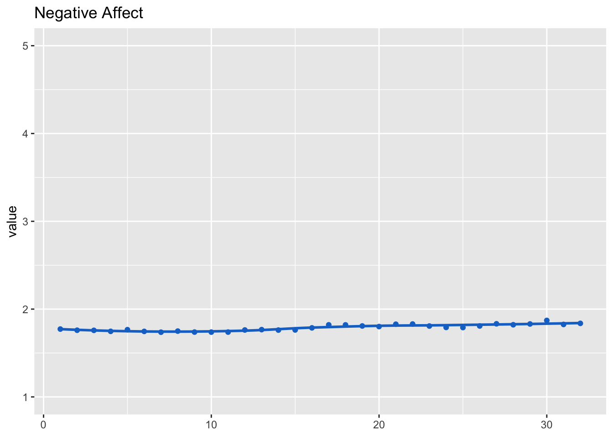
Negative affect was measured as a scale. We hence inspect factorial validity using CFA.
We first test assumption of multivariate normality. We’ll focus on wave 1 here.
d_long_100_imp %>%
filter(wave == 1) %>%
select(aff_neg_1, aff_neg_2, aff_neg_3, aff_neg_4, aff_neg_5, aff_neg_6) %>%
mardia()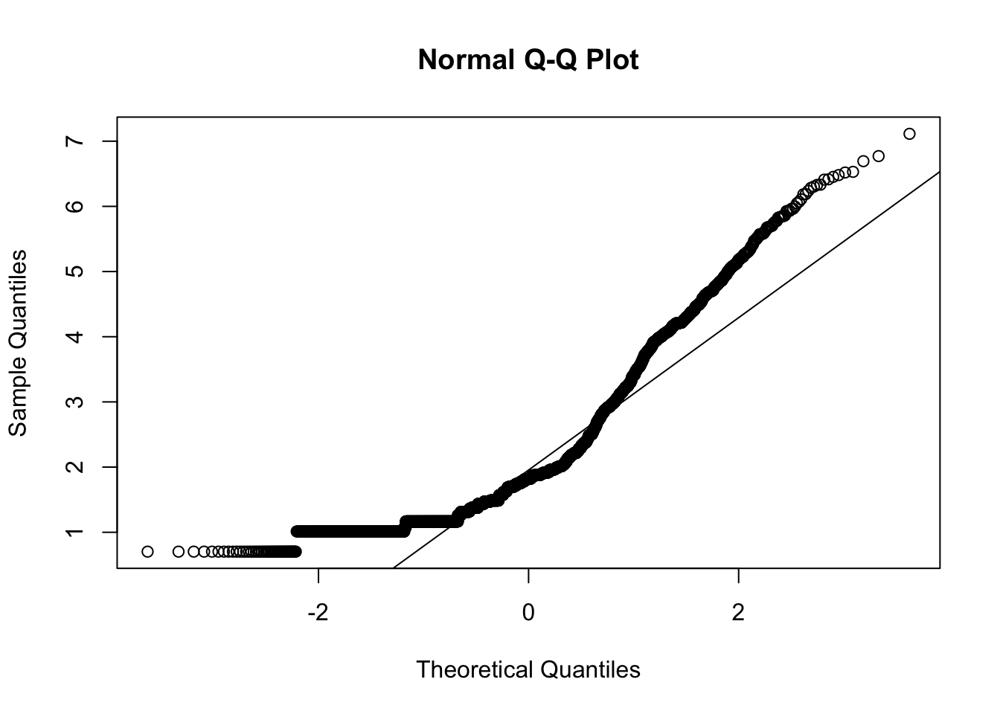
## Call: mardia(x = .)
##
## Mardia tests of multivariate skew and kurtosis
## Use describe(x) the to get univariate tests
## n.obs = 3485 num.vars = 6
## b1p = 13 skew = 7410 with probability <= 0
## small sample skew = 7418 with probability <= 0
## b2p = 84 kurtosis = 108 with probability <= 0Assumption of multivariate normal distribution was violated; hence, robust estimator will be used.
model <- "
aff_neg =~ a1*aff_neg_1 + a2*aff_neg_2 + a3*aff_neg_3 + a4*aff_neg_4 + a5*aff_neg_5 + a6*aff_neg_6
"
cfa_aff_neg <- cfa(model, d_long_100_imp, group = "wave", estimator = "MLM")
summary(cfa_aff_neg, standardized = TRUE, fit = TRUE, estimates = FALSE)## lavaan 0.6-12 ended normally after 97 iterations
##
## Estimator ML
## Optimization method NLMINB
## Number of model parameters 576
## Number of equality constraints 155
##
## Number of observations per group:
## 1 3485
## 2 3485
## 3 3485
## 4 3485
## 5 3485
## 6 3485
## 7 3485
## 8 3485
## 9 3485
## 10 3485
## 11 3485
## 12 3485
## 13 3485
## 14 3485
## 15 3485
## 16 3485
## 17 3485
## 18 3485
## 19 3485
## 20 3485
## 21 3485
## 22 3485
## 23 3485
## 24 3485
## 25 3485
## 26 3485
## 27 3485
## 28 3485
## 29 3485
## 30 3485
## 31 3485
## 32 3485
##
## Model Test User Model:
## Standard Robust
## Test Statistic 8155.421 4571.822
## Degrees of freedom 443 443
## P-value (Chi-square) 0.000 0.000
## Scaling correction factor 1.784
## Satorra-Bentler correction
## Test statistic for each group:
## 1 391.493 219.466
## 2 406.640 227.957
## 3 234.588 131.507
## 4 291.654 163.497
## 5 256.371 143.718
## 6 177.056 99.255
## 7 259.496 145.470
## 8 243.801 136.671
## 9 305.953 171.513
## 10 205.232 115.051
## 11 268.319 150.416
## 12 257.237 144.204
## 13 227.726 127.660
## 14 235.216 131.859
## 15 242.609 136.003
## 16 202.519 113.529
## 17 276.639 155.080
## 18 210.733 118.134
## 19 287.146 160.970
## 20 219.340 122.959
## 21 209.117 117.228
## 22 199.317 111.735
## 23 255.783 143.388
## 24 262.195 146.983
## 25 299.786 168.056
## 26 314.292 176.188
## 27 230.252 129.076
## 28 296.724 166.340
## 29 209.875 117.653
## 30 206.825 115.944
## 31 214.186 120.070
## 32 257.301 144.240
##
## Model Test Baseline Model:
##
## Test statistic 423343.956 151294.536
## Degrees of freedom 480 480
## P-value 0.000 0.000
## Scaling correction factor 2.798
##
## User Model versus Baseline Model:
##
## Comparative Fit Index (CFI) 0.982 0.973
## Tucker-Lewis Index (TLI) 0.980 0.970
##
## Robust Comparative Fit Index (CFI) 0.983
## Robust Tucker-Lewis Index (TLI) 0.981
##
## Loglikelihood and Information Criteria:
##
## Loglikelihood user model (H0) -775328.855 -775328.855
## Loglikelihood unrestricted model (H1) -771251.144 -771251.144
##
## Akaike (AIC) 1551499.709 1551499.709
## Bayesian (BIC) 1555550.554 1555550.554
## Sample-size adjusted Bayesian (BIC) 1554212.601 1554212.601
##
## Root Mean Square Error of Approximation:
##
## RMSEA 0.071 0.052
## 90 Percent confidence interval - lower 0.069 0.051
## 90 Percent confidence interval - upper 0.072 0.053
## P-value RMSEA <= 0.05 0.000 0.003
##
## Robust RMSEA 0.069
## 90 Percent confidence interval - lower 0.067
## 90 Percent confidence interval - upper 0.071
##
## Standardized Root Mean Square Residual:
##
## SRMR 0.022 0.022The data fit the model very well, \(\chi^2\)(443) = 8155.42, p < .001, CFI = .98, RMSEA = .07, 90% CI [.07, .07], SRMR = .02.
Let’s next inspect reliability.
rel_aff_neg <- get_rel(cfa_aff_neg)The average reliability across all waves was omega = 0.91, hence good.
model_aff_neg <- lmer(aff_neg_m ~ (1 | id) + (1 | wave), d_long_100_imp)
summary(model_aff_neg)## Linear mixed model fit by REML ['lmerMod']
## Formula: aff_neg_m ~ (1 | id) + (1 | wave)
## Data: d_long_100_imp
##
## REML criterion at convergence: 262586
##
## Scaled residuals:
## Min 1Q Median 3Q Max
## -4.326 -0.564 -0.193 0.281 5.038
##
## Random effects:
## Groups Name Variance Std.Dev.
## id (Intercept) 0.19149 0.438
## wave (Intercept) 0.00152 0.039
## Residual 0.57069 0.755
## Number of obs: 111520, groups: id, 3483; wave, 32
##
## Fixed effects:
## Estimate Std. Error t value
## (Intercept) 1.7879 0.0104 172Let’s now export factor scores, necessary for results reported in additional analyses.
# with imputed data
cfa_aff_neg_50 <- cfa(model, d_long_50_imp, group = "wave", estimator = "MLM")
d_long_50_imp$aff_neg_fs <- get_fs(cfa_aff_neg_50)
# without imputed data
cfa_aff_neg <- cfa(model, d_long_50, group = "wave", estimator = "MLM")
d_long_50$aff_neg_fs <- get_fs(cfa_aff_neg)The only other variable that was measured as a scale was Locus of Control. Below I hence report the scale’s factorial validity. Waves for which not a sufficient number of respondents took part were excluded.
model <- "
loc_cntrl_int =~ a1*loc_cntrl_int_1 + a2*loc_cntrl_int_2 + a3*loc_cntrl_int_3 + a4*loc_cntrl_int_4
# loc_cntrl_int_1 ~~ loc_cntrl_int_2
loc_cntrl_int_3 ~~ loc_cntrl_int_4
"
cfa_loc_cntrl_int <- cfa(model,
filter(d_long_100_imp, wave != 11, wave != 20, wave != 26, wave != 27, wave != 29, wave != 31, wave != 32),
# d_long_100_imp,
group = "wave")
summary(cfa_loc_cntrl_int, standardized = TRUE, fit = TRUE, estimates = FALSE)## lavaan 0.6-12 ended normally after 95 iterations
##
## Estimator ML
## Optimization method NLMINB
## Number of model parameters 325
## Number of equality constraints 72
##
## Number of observations per group:
## 1 3485
## 2 3485
## 3 3485
## 4 3485
## 5 3485
## 6 3485
## 7 3485
## 8 3485
## 9 3485
## 10 3485
## 12 3485
## 13 3485
## 14 3485
## 15 3485
## 16 3485
## 17 3485
## 18 3485
## 19 3485
## 21 3485
## 22 3485
## 23 3485
## 24 3485
## 25 3485
## 28 3485
## 30 3485
##
## Model Test User Model:
##
## Test statistic 122.774
## Degrees of freedom 97
## P-value (Chi-square) 0.040
## Test statistic for each group:
## 1 5.665
## 2 10.007
## 3 8.864
## 4 1.371
## 5 6.049
## 6 1.100
## 7 1.543
## 8 1.182
## 9 2.092
## 10 7.654
## 12 13.962
## 13 1.891
## 14 8.496
## 15 3.248
## 16 2.473
## 17 1.560
## 18 1.962
## 19 3.199
## 21 7.813
## 22 4.389
## 23 2.719
## 24 4.535
## 25 7.272
## 28 11.643
## 30 2.083
##
## Model Test Baseline Model:
##
## Test statistic 56509.964
## Degrees of freedom 150
## P-value 0.000
##
## User Model versus Baseline Model:
##
## Comparative Fit Index (CFI) 1.000
## Tucker-Lewis Index (TLI) 0.999
##
## Loglikelihood and Information Criteria:
##
## Loglikelihood user model (H0) -416701.427
## Loglikelihood unrestricted model (H1) -416640.040
##
## Akaike (AIC) 833908.854
## Bayesian (BIC) 836280.754
## Sample-size adjusted Bayesian (BIC) 835476.712
##
## Root Mean Square Error of Approximation:
##
## RMSEA 0.009
## 90 Percent confidence interval - lower 0.002
## 90 Percent confidence interval - upper 0.013
## P-value RMSEA <= 0.05 1.000
##
## Standardized Root Mean Square Residual:
##
## SRMR 0.009The data fit the model very well, \(\chi^2\)(97) = 122.77, p = .040, CFI = 1.00, RMSEA < .01, 90% CI [< .01, .01], SRMR < .01.
Table with descriptives of main variables.
tab_desc_dat <- rbind(
"Life satisfaction" = get_specs(fit_life_sat),
"Positive affect" = get_specs(model_aff_pos),
"Negative affect" = get_specs(model_aff_neg),
"Read" = get_specs(model_soc_med_read),
"Like & share" = get_specs(model_soc_med_like_share),
"Posting" = get_specs(model_soc_med_post),
"Facebook" = get_specs(model_soc_med_fb),
"Twitter" = c(sd = get_specs(model_soc_med_tw)$sd,
min = min(soc_med_tw_m$value, na.rm = TRUE),
max = max(soc_med_tw_m$value, na.rm = TRUE),
mean = mean(soc_med_tw_m$value, na.rm = TRUE)
),
"Instagram" = get_specs(model_soc_med_ig),
"WhatsApp" = get_specs(model_soc_med_wa),
"YouTube" = get_specs(model_soc_med_yt)
) %>%
as.data.frame()
tab_desc_datDisplay the developments of all variables in a combined figure.
fig_desc_dat <- data.frame(
rbind(
dat_fig_life_sat,
dat_fig_aff_pos,
dat_fig_aff_neg,
dat_fig_soc_med_read,
dat_fig_soc_med_like_share,
dat_fig_soc_med_post,
dat_fig_soc_med_fb,
dat_fig_soc_med_tw,
dat_fig_soc_med_ig,
dat_fig_soc_med_wa,
dat_fig_soc_med_yt
) %>%
mutate(
type = factor(.$type, levels = c("Life satisfaction", "Affect", "Social media use", "Social media channel")),
dimension = factor(.$dimension, levels = c("Life satisfaction", "Positive", "Negative", "Reading", "Liking & Sharing", "Posting", "Facebook", "Twitter", "Instagram", "WhatsApp", "YouTube"))
)
)
fig_desc_life_sat <- make_graph(
fig_desc_dat %>% filter(type == "Life satisfaction"),
title = "Life satisfaction",
ll = 0, ul = 10,
lmer = FALSE,
line = TRUE,
legend = FALSE,
points = FALSE
)
fig_desc_aff <- make_graph(
fig_desc_dat %>% filter(type == "Affect"),
title = "Affect",
ll = 1, ul = 5,
lmer = FALSE,
line = TRUE,
points = FALSE,
legend = TRUE
)
fig_desc_soc_med_use <- make_graph(
fig_desc_dat %>% filter(type == "Social media use"),
title = "Social media use",
ll = 1, ul = 5,
lmer = FALSE,
line = TRUE,
points = FALSE,
legend = TRUE
)
fig_desc_soc_med_channel <- make_graph(
fig_desc_dat %>% filter(type == "Social media channel"),
title = "Social media channel",
ll = 1, ul = 5,
lmer = FALSE,
line = TRUE,
points = FALSE,
legend = TRUE
)
fig_desc <- grid.arrange(fig_desc_life_sat, fig_desc_aff,
fig_desc_soc_med_use, fig_desc_soc_med_channel,
nrow = 2, ncol = 2)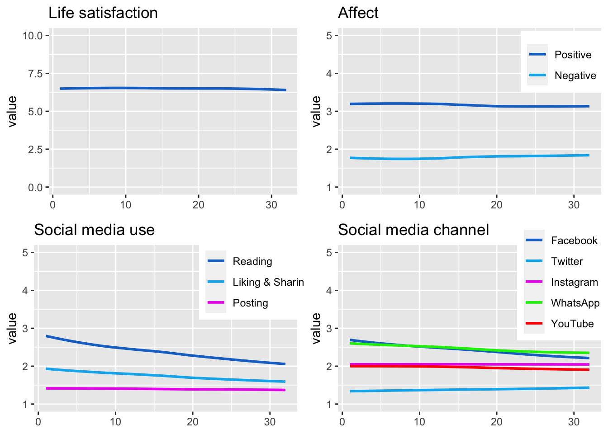
ggsave("figures/fig_descriptives.png",
width = 10, height = 5,
plot = fig_desc)Before running the analyses, let’s briefly check zero-order correlation matrix, to get general picture and also for potential multicollinearity. We use variables from T1.
Multicollinearity will then also be checked explicitly in each analysis.
d_long_100_imp %>%
filter(wave == 1) %>%
select(life_sat, aff_neg_m, aff_pos_m,
soc_med_read, soc_med_post, soc_med_like_share,
soc_med_fb, soc_med_ig, soc_med_tw, soc_med_wa, soc_med_yt,
health, corona_pos, work_h, work_homeoff, hh_income, med_txt_kro, med_txt_sta, med_txt_pre, med_txt_oes, med_txt_kur, med_txt_slz, med_txt_son, med_vid_orf, med_vid_pri, med_txt_kro, med_txt_sta, med_txt_pre, med_txt_oes, med_txt_kur, med_txt_slz, med_txt_son, med_vid_orf, med_vid_pri, act_wrk, act_spo, act_frn, act_sho, act_pet, risk_prop, loc_cntrl_int_m, sat_dem) %>%
cor(use = "pairwise.complete.obs") %>%
as.data.frame()Let’s also briefly look at bivariate relations between the types and channels of social media use and the well-being facets.
dat_cor <-
d_long_100_mim %>%
filter(wave == 1) %>% # we can use wave 1 only, because mean values are the same across waves
select(`Life satis-\nfaction` = life_sat_b,
`Affect\npositive` = aff_pos_m_b,
`Affect\nnegative` = aff_neg_m_b,
`Reading` = soc_med_read_b,
`Posting` = soc_med_post_b,
`Like &\nshare` = soc_med_like_share_b,
`Facebook` = soc_med_fb_b,
`Instagram` = soc_med_ig_b,
`Twitter` = soc_med_tw_b,
`WhatsApp` = soc_med_wa_b,
`YouTube` = soc_med_yt_b)
# cor() %>%
# as.data.frame()
# correlate() %>%
# fashion()
tab_cor <-
dat_cor %>%
correlate() %>%
fashion() %T>%
print()## term Life.satis..faction Affect.positive Affect.negative Reading Posting Like...share Facebook Instagram Twitter WhatsApp YouTube
## 1 Life satis-\nfaction .60 -.55 -.06 -.21 -.18 -.07 .00 -.12 .01 -.12
## 2 Affect\npositive .60 -.50 -.14 -.04 -.12 -.07 -.02 .01 .03 -.01
## 3 Affect\nnegative -.55 -.50 .47 .56 .57 .28 .46 .47 .37 .52
## 4 Reading -.06 -.14 .47 .48 .76 .48 .74 .46 .43 .53
## 5 Posting -.21 -.04 .56 .48 .77 .31 .50 .72 .55 .72
## 6 Like &\nshare -.18 -.12 .57 .76 .77 .35 .68 .62 .55 .68
## 7 Facebook -.07 -.07 .28 .48 .31 .35 .26 .17 .46 .28
## 8 Instagram .00 -.02 .46 .74 .50 .68 .26 .61 .52 .77
## 9 Twitter -.12 .01 .47 .46 .72 .62 .17 .61 .44 .75
## 10 WhatsApp .01 .03 .37 .43 .55 .55 .46 .52 .44 .63
## 11 YouTube -.12 -.01 .52 .53 .72 .68 .28 .77 .75 .63int_breaks <- function(x, n = 4) {
l <- pretty(x, n)
l[abs(l %% 1) < .Machine$double.eps ^ 0.5]
}
fig_cor <-
dat_cor %>%
ggpairs(
upper = list(continuous = cor_plot),
lower = list(continuous = wrap("points", alpha = 0.3, size=0.1),
combo = wrap("dot", alpha = 0.3, size=0.1)),
progress = FALSE
) +
scale_x_continuous(breaks = int_breaks) +
theme_bw()
fig_cor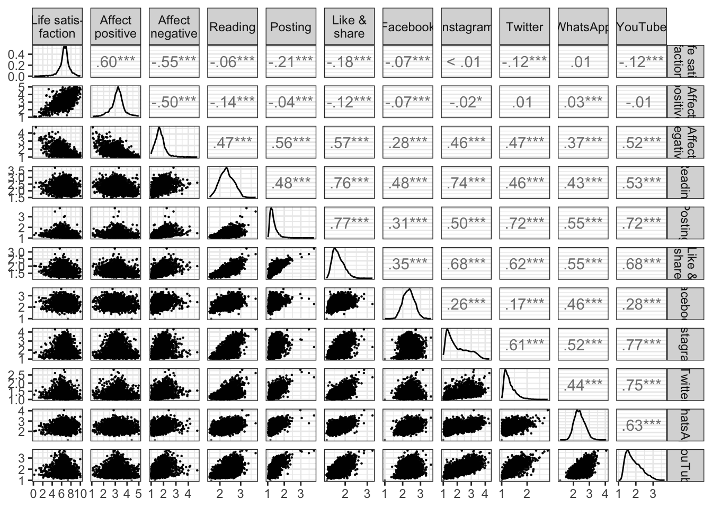
ggsave("figures/fig_cor.png", width = 8, height = 8)model_life_sat_lmer_pub <- "
life_sat ~
(1 | id) + (1 | wave) +
soc_med_read_w + soc_med_like_share_w + soc_med_post_w +
soc_med_fb_w + soc_med_ig_w + soc_med_wa_w + soc_med_yt_w + soc_med_tw_w +
soc_med_read_b + soc_med_like_share_b + soc_med_post_b +
soc_med_fb_b + soc_med_ig_b + soc_med_wa_b + soc_med_yt_b + soc_med_tw_b +
age + male + born_aus + born_aus_prnts + edu_fac + employment_fac +
res_vienna + acc_bal + acc_gar + home_sqm +
corona_pos_b + corona_pos_w +
work_h_b + work_h_w +
work_homeoff_b + work_homeoff_w +
hh_income_b + hh_income_w +
hh_adults + hh_child18 + hh_child17 + hh_child14 + hh_child5 + hh_child2 +
hh_oldfam + hh_outfam + hh_partner +
home_owner +
med_txt_kro_b + med_txt_sta_b + med_txt_pre_b + med_txt_oes_b + med_txt_kur_b + med_txt_slz_b + med_txt_son_b +
med_vid_orf_b + med_vid_pri_b +
med_txt_kro_w + med_txt_sta_w + med_txt_pre_w + med_txt_oes_w + med_txt_kur_w + med_txt_slz_w + med_txt_son_w +
med_vid_orf_w + med_vid_pri_w +
risk_prop_b + risk_prop_w +
act_wrk_w + act_spo_w + act_frn_w + act_sho_w + act_pet_w +
act_wrk_b + act_spo_b + act_frn_b + act_sho_b + act_pet_b +
sat_dem_w + sat_dem_b +
health_w + health_b +
loc_cntrl_int_m_w + loc_cntrl_int_m_b
"Let’s first inspect multicollinearity.
check_collinearity(lmerTest::lmer(model_life_sat_lmer_pub, d_long_100_imp))No within-person predictor shows increased values for multicollinearity. Hence results straightforward.
Let’s next inspect results of within-person predictors. Only parts of model shown to save space.
fit_life_sat_lmer_pub <- with(d_long_100_mim_mice, exp = lmerTest::lmer(model_life_sat_lmer_pub))
fit_life_sat_lmer_pub <- summary(pool(fit_life_sat_lmer_pub), conf.int = TRUE)
print_res(fit_life_sat_lmer_pub)model_aff_pos_lmer_pub <- "
aff_pos_m ~
(1 | id) + (1 | wave) +
soc_med_read_w + soc_med_like_share_w + soc_med_post_w +
soc_med_fb_w + soc_med_ig_w + soc_med_wa_w + soc_med_yt_w + soc_med_tw_w +
soc_med_read_b + soc_med_like_share_b + soc_med_post_b +
soc_med_fb_b + soc_med_ig_b + soc_med_wa_b + soc_med_yt_b + soc_med_tw_b +
age + male + born_aus + born_aus_prnts + edu_fac + employment_fac +
res_vienna + acc_bal + acc_gar + home_sqm +
corona_pos_b + corona_pos_w +
work_h_b + work_h_w +
work_homeoff_b + work_homeoff_w +
hh_income_b + hh_income_w +
hh_adults + hh_child18 + hh_child17 + hh_child14 + hh_child5 + hh_child2 +
hh_oldfam + hh_outfam + hh_partner +
home_owner +
med_txt_kro_b + med_txt_sta_b + med_txt_pre_b + med_txt_oes_b + med_txt_kur_b + med_txt_slz_b + med_txt_son_b +
med_vid_orf_b + med_vid_pri_b +
med_txt_kro_w + med_txt_sta_w + med_txt_pre_w + med_txt_oes_w + med_txt_kur_w + med_txt_slz_w + med_txt_son_w +
med_vid_orf_w + med_vid_pri_w +
risk_prop_b + risk_prop_w +
act_wrk_w + act_spo_w + act_frn_w + act_sho_w + act_pet_w +
act_wrk_b + act_spo_b + act_frn_b + act_sho_b + act_pet_b +
sat_dem_w + sat_dem_b +
health_w + health_b +
loc_cntrl_int_m_w + loc_cntrl_int_m_b
"Let’s first inspect multicollinearity.
check_collinearity(lmerTest::lmer(model_aff_pos_lmer_pub, d_long_100_imp))No within-person predictors show multicollinear relations.
In what follows, the results of within-person predictors.
fit_aff_pos_lmer_pub <- with(d_long_100_mim_mice, exp = lmerTest::lmer(model_aff_pos_lmer_pub))
fit_aff_pos_lmer_pub <- summary(pool(fit_aff_pos_lmer_pub), conf.int = TRUE)
print_res(fit_aff_pos_lmer_pub)model_aff_neg_lmer_pub <- "
aff_neg_m ~
(1 | id) + (1 | wave) +
soc_med_read_w + soc_med_like_share_w + soc_med_post_w +
soc_med_fb_w + soc_med_ig_w + soc_med_wa_w + soc_med_yt_w + soc_med_tw_w +
soc_med_read_b + soc_med_like_share_b + soc_med_post_b +
soc_med_fb_b + soc_med_ig_b + soc_med_wa_b + soc_med_yt_b + soc_med_tw_b +
age + male + born_aus + born_aus_prnts + edu_fac + employment_fac +
res_vienna + acc_bal + acc_gar + home_sqm +
corona_pos_b + corona_pos_w +
work_h_b + work_h_w +
work_homeoff_b + work_homeoff_w +
hh_income_b + hh_income_w +
hh_adults + hh_child18 + hh_child17 + hh_child14 + hh_child5 + hh_child2 +
hh_oldfam + hh_outfam + hh_partner +
home_owner +
med_txt_kro_b + med_txt_sta_b + med_txt_pre_b + med_txt_oes_b + med_txt_kur_b + med_txt_slz_b + med_txt_son_b +
med_vid_orf_b + med_vid_pri_b +
med_txt_kro_w + med_txt_sta_w + med_txt_pre_w + med_txt_oes_w + med_txt_kur_w + med_txt_slz_w + med_txt_son_w +
med_vid_orf_w + med_vid_pri_w +
risk_prop_b + risk_prop_w +
act_wrk_w + act_spo_w + act_frn_w + act_sho_w + act_pet_w +
act_wrk_b + act_spo_b + act_frn_b + act_sho_b + act_pet_b +
sat_dem_w + sat_dem_b +
health_w + health_b +
loc_cntrl_int_m_w + loc_cntrl_int_m_b
"Let’s inspect multicollinearity.
check_collinearity(lmerTest::lmer(model_aff_neg_lmer_pub, d_long_100_imp))No within-person predictors show multicollinear relations.
Here are the results for the within-person predictors.
fit_aff_neg_lmer_pub <- with(d_long_100_mim_mice, exp = lmerTest::lmer(model_aff_neg_lmer_pub))
fit_aff_neg_lmer_pub <- summary(pool(fit_aff_neg_lmer_pub), conf.int = TRUE)
print_res(fit_aff_neg_lmer_pub)Then let’s report also the standardized results. Helps compare effect sizes across differently scaled predictors.
fit_life_sat_lmer_std <- with(d_long_100_mim_mice_std, exp = lmerTest::lmer(model_life_sat_lmer_pub))
fit_life_sat_lmer_std <- summary(pool(fit_life_sat_lmer_std), conf.int = TRUE)
print_res(fit_life_sat_lmer_std)fit_aff_pos_lmer_std <- with(d_long_100_mim_mice_std, exp = lmerTest::lmer(model_aff_pos_lmer_pub))
fit_aff_pos_lmer_std <- summary(pool(fit_aff_pos_lmer_std), conf.int = TRUE)
print_res(fit_aff_pos_lmer_std)fit_aff_neg_lmer_std <- with(d_long_100_mim_mice_std, exp = lmerTest::lmer(model_aff_neg_lmer_pub))
fit_aff_neg_lmer_std <- summary(pool(fit_aff_neg_lmer_std), conf.int = TRUE)
print_res(fit_aff_neg_lmer_std)Let’s extract results for a table of within-person effects.
tab_within <-
data_tab_std %>%
filter(Type %in% c("Activity", "Channels")) %>%
select(std = estimate) %>%
cbind(data_tab_within) %>%
mutate(p.value = td::my_round(p.value, "p")) %>%
arrange(dv) %>%
select(Outcome = dv,
Predictor = iv,
b = estimate,
`Lower` = conf.low,
`Higher` = conf.high,
beta = "std",
p = "p.value")
tab_withinLet’s visualize results. First, results of unstandardized predictors.
# get dat
data_tab_within <- rbind(
get_dat_res(fit_aff_neg_lmer_pub, fit_aff_pos_lmer_pub, fit_life_sat_lmer_pub,
type = "Activity", variance = "within", analysis = "Publication"),
get_dat_res(fit_aff_neg_lmer_pub, fit_aff_pos_lmer_pub, fit_life_sat_lmer_pub,
type = "Channels", variance = "within", analysis = "Publication")
)
# make fig
fig_results_within <- make_graph_res(
data = data_tab_within,
sesoi = "est",
legend = FALSE
, facet = "type"
# , title = "Results of selected covariates"
)
fig_results_within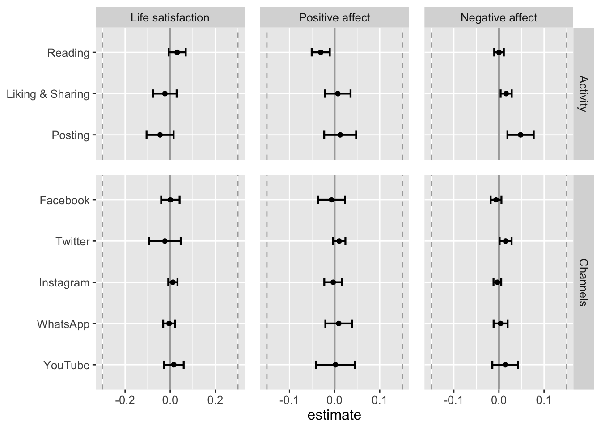
# save figure
ggsave("figures/fig_results_within.png",
width = 7, height = 4,
plot = fig_results_within)Let’s next visualize standardized predictors, to allow for better comparison across differently scaled variables.
# make figure
data_tab_comp <- rbind(
get_dat_res(fit_aff_neg_lmer_std, fit_aff_pos_lmer_std, fit_life_sat_lmer_std,
type = "Activity", variance = "within", analysis = "standardized"),
get_dat_res(fit_aff_neg_lmer_std, fit_aff_pos_lmer_std, fit_life_sat_lmer_std,
type = "Channels", variance = "within", analysis = "standardized"),
get_dat_res(fit_aff_neg_lmer_std, fit_aff_pos_lmer_std, fit_life_sat_lmer_std,
type = "News\nuse", variance = "within", analysis = "standardized"),
get_dat_res(fit_aff_neg_lmer_std, fit_aff_pos_lmer_std, fit_life_sat_lmer_std,
type = "Living\nconditions", variance = "within", analysis = "standardized"),
get_dat_res(fit_aff_neg_lmer_std, fit_aff_pos_lmer_std, fit_life_sat_lmer_std,
type = "Outdoor\nactivities", variance = "within", analysis = "standardized"),
get_dat_res(fit_aff_neg_lmer_std, fit_aff_pos_lmer_std, fit_life_sat_lmer_std,
type = "Psycho-\nlogy", variance = "within", analysis = "standardized")
)
fig_results_comp <- make_graph_res(
data = data_tab_comp,
sesoi = "std",
legend = FALSE
, facet = "type"
# , title = "Results of selected covariates"
)
fig_results_comp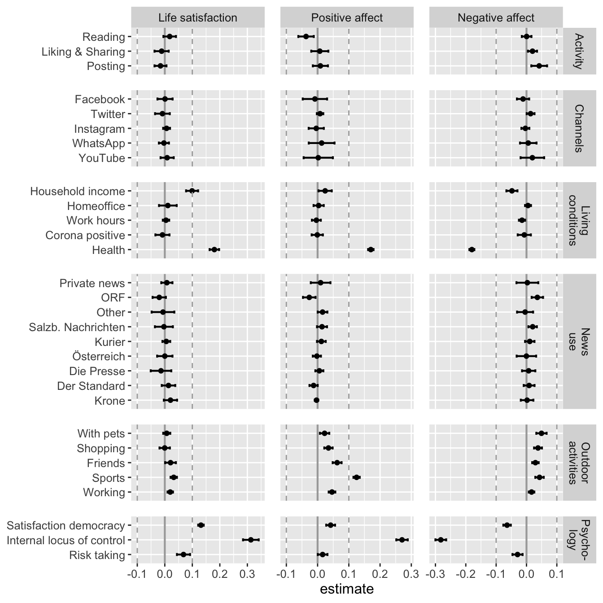
# save figure
ggsave("figures/fig_results_comp.png",
width = 7, height = 7,
plot = fig_results_control_std)save.image("data/workspace_2.RData")
Social media use
Social media use (and channels) were measured at waves 1, 2, 8, 17, 23, 28, and for everyone who was newly recruited during the study at the first wave.
Reading
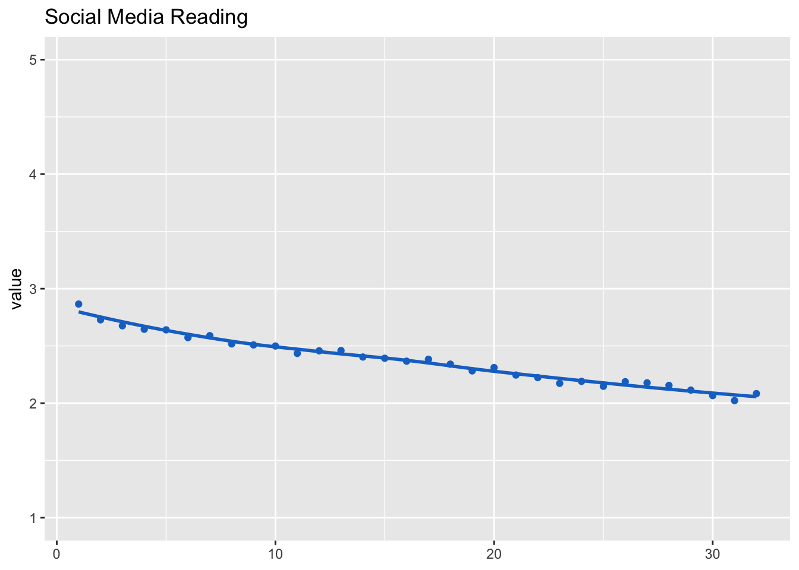
Liking & sharing
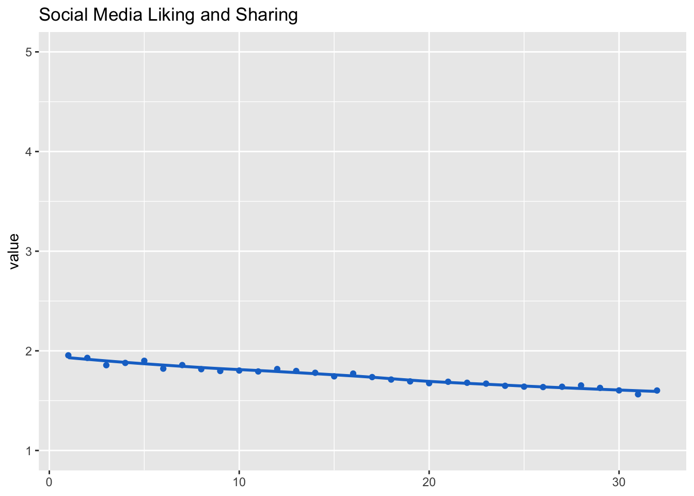
Posting
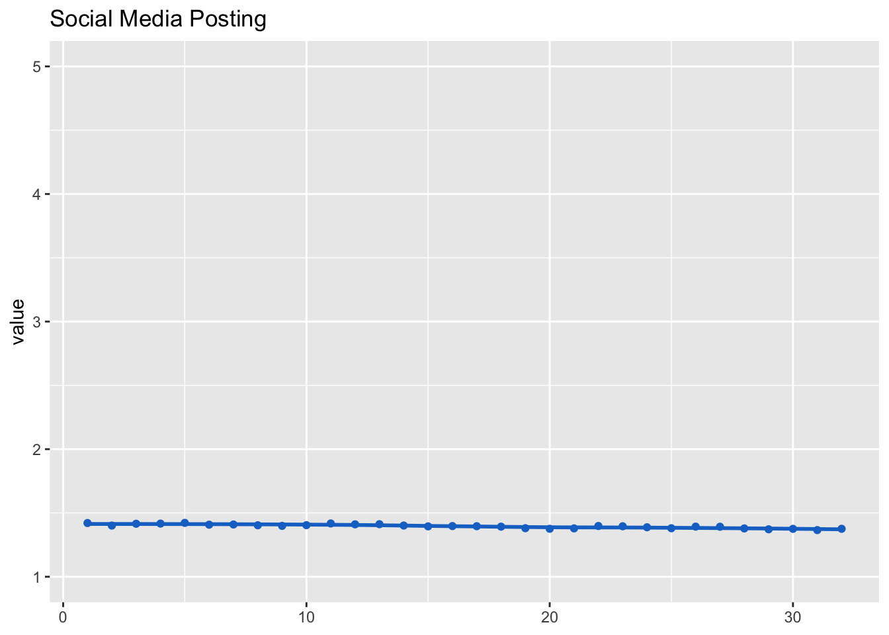